Next: Developer
Up: AMILab
Previous: AMILab
Subsections
The interface is composed of the following tabs (or pages):
- the IO tab, to select the input volume and select or create the mask image.
- the Circle tab, to select parameter of the 3D boundary integration along a circle.
- the Scales tab, to select the multiscale analysis parameters.
- the Run tab, to run the algorithm and display the results.
- the Recons tab, to create associated skeleton and reconstruction based on the multiscale result.
This page allows:
- Selecting the input image and loading it
- Selecting the mask image or generating it from the input, the mask image allows to reduce the overall computation time and is currently required. This image must be of type UCHAR and the values > 127 are considered part of the mask.
The algorithm integrates the boundary information along a circle for each central point candidate. This integration can be a simple averaging of all the boundary values found along the circle or a more complex function.
The C++ class that compute the boundary information along a circle is
CalculRepCercle.
As described in [3,2,1]
For each scale 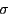, a response is computed as a combination of the boundary information
along a circle in the estimated cross-section plane of the vessel.
The circle
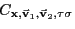 is defined by its center 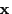,
an estimate of the cross-section orientation given
by the eigenvectors
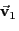 and
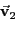,
and a radius proportional of the current scale 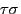.
The boundary information, denoted 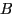, is obtained with the scalar product of the gradient and the radial direction.
An initial version of this filter consisted in averaging the boundary values around the computed circle:
with
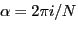,
and
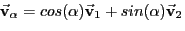, where 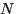 is the number
of points along the circle.
In all the experiments, the value 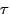 is set to 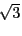, to maximize the selected response at the center in the case of a cylindrical circular vessel with Gaussian cross-section [3],
and the number of points around the integrating circle is set to 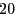.
In order to improve both the selectivity of the filter and its robustness to outliers, we introduce the modifications:
- we only keep the minimum of the boundary information in opposite directions,
- we select the average over 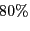 of the highest obtained values.
The first modification allows reducing the response obtained at standard edges, where high gradients are present in only one side of the circle. The second modification prevents strong reduction of the vesselness response in the presence of junctions or similar intensity nearby structures.
Next: Developer
Up: AMILab
Previous: AMILab
...